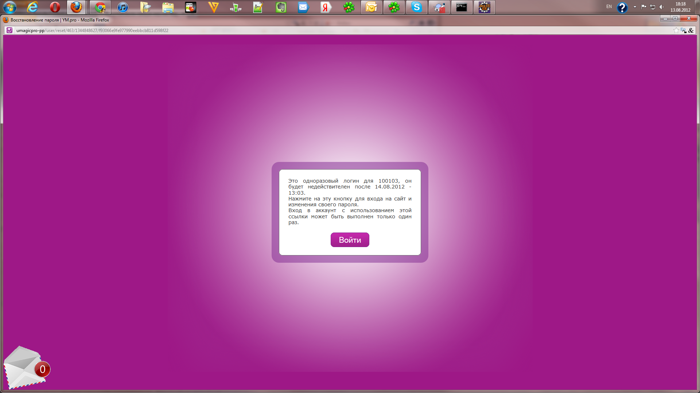

| user-agent: | Mozilla/5.0 (Windows NT 6.1; WOW64; rv:13.0) Gecko/20100101 Firefox/13.0 |
| selenium-rc: | vUNKNOWN [UNKNOWN] |
| selenium-core: | vUNKNOWN [UNKNOWN] |
| LoggingSelenium: | revision [96] |
| test-started: | 18:16:52 13-08-2012 |
| test-finished: | 18:18:32 13-08-2012 |
| test-duration [ms]: | 99 467 |
| commands processed: | 225 |
| verifications processed: | 73 |
| failed commands: | 61 |
| last failed message: | ERROR: Element id=b-mail-domik-username11 not found |
| commands not logged: | {getHtmlSource} |
| Selenium-Command | Parameter-1 | Parameter-2 | Res.RC | Res.Selenium | Time [ms] | Calling-Class with Linenumber |
| executing createNewLoggingSelenium() | ||||||
| windowFocus | OK | OK | 3 | com.test.fw.SeleniumHelper#72 | ||
| windowMaximize | OK | OK | 16 | com.test.fw.SeleniumHelper#73 | ||
| executing getSelenium() | ||||||
| getLocation | OK | http://localhost:4444/selenium-server/core/Blank.html?start=true | 100 | com.test.fw.SeleniumHelper#34 | ||
| executing testRestorPassTrue() | ||||||
| Restorу pass with e-mail= 100102 | ||||||
| open | http://umagicpro-pp/user/login | OK | OK | 2007 | com.exit.tests.Administrator#74 | |
| isElementPresent | link=Администратор | OK | true | 5 | com.exit.tests.Administrator#75 | |
| click | link=Восстановить пароль | OK | OK | 67 | com.exit.tests.Administrator#76 | |
| waitForPageToLoad | 30000 | OK | OK | 1074 | com.exit.tests.Administrator#77 | |
| getText | css=span | OK | Имя пользователя или адрес e-mail: * | 4 | com.exit.tests.Administrator#78 | |
| isElementPresent | id=error | OK | false | 4 | com.exit.tests.Administrator#79 | |
| type | name | 100102 | OK | OK | 14 | com.exit.tests.Administrator#80 |
| click | op | OK | OK | 66 | com.exit.tests.Administrator#81 | |
| waitForPageToLoad | 30000 | OK | OK | 3053 | com.exit.tests.Administrator#82 | |
| getText | css=th | OK | Вход в личный кабинет администратора | 9 | com.exit.tests.Administrator#83 | |
| isElementPresent | id=error | OK | false | 7 | com.exit.tests.Administrator#84 | |
| getText | css=div.messages.status | OK | Дальнейшие инструкции отправлены на указанный почтовый адрес. | 8 | com.exit.tests.Administrator#85 | |
| isElementPresent | id=error | OK | false | 7 | com.exit.tests.Administrator#86 | |
| open | http://mail.yandex.ru | OK | OK | 1077 | com.exit.tests.Administrator#90 | |
| type | id=b-mail-domik-username11 | SqaTest | OK | OK | 10 | com.exit.tests.Administrator#91 |
| type | id=b-mail-domik-password11 | gtnhjczy | OK | OK | 8 | com.exit.tests.Administrator#92 |
| click | css=input.b-mail-button__button | OK | OK | 27 | com.exit.tests.Administrator#93 | |
| isElementPresent | css=label.b-messages-head__title | OK | false | 18 | com.exit.tests.Administrator#98 | |
| isElementPresent | css=label.b-messages-head__title | OK | true | 40 | com.exit.tests.Administrator#98 | |
| getText | css=span.b-messages__subject | OK | Восстановление пароля | 26 | com.exit.tests.Administrator#102 | |
| isElementPresent | id=error | OK | false | 27 | com.exit.tests.Administrator#103 | |
| click | css=span.b-messages__subject | OK | OK | 50 | com.exit.tests.Administrator#106 | |
| isElementPresent | //a[contains(text(),'http://umagicpro-pp/user/reset/')] | OK | false | 9 | com.exit.tests.Administrator#116 | |
| isElementPresent | //a[contains(text(),'http://umagicpro-pp/user/reset/')] | OK | true | 14 | com.exit.tests.Administrator#116 | |
| click | //a[contains(text(),'http://umagicpro-pp/user/reset/')] | OK | OK | 380 | com.exit.tests.Administrator#117 | |
| isTextPresent | Нажмите на эту кнопку для входа на сайт и изменения своего пароля. Вход в аккаунт с использованием этой ссылки может быть выполнен только один раз. | OK | false | 79 | com.exit.tests.Administrator#128 | |
automaticErrorScreenshot2012-08-13_18-17.png | 435 | com.exit.tests.Administrator#129 | ||||
| click | id=edit-submit | ERROR | com.thoughtworks.selenium.SeleniumException - ERROR: Element id=edit-submit not found | 445 | com.exit.tests.Administrator#129 | |
| isTextPresent | Нажмите на эту кнопку для входа на сайт и изменения своего пароля. Вход в аккаунт с использованием этой ссылки может быть выполнен только один раз. | OK | false | 55 | com.exit.tests.Administrator#128 | |
automaticErrorScreenshot2012-08-13_18-17.png | 320 | com.exit.tests.Administrator#129 | ||||
| click | id=edit-submit | ERROR | com.thoughtworks.selenium.SeleniumException - ERROR: Element id=edit-submit not found | 324 | com.exit.tests.Administrator#129 | |
| isTextPresent | Нажмите на эту кнопку для входа на сайт и изменения своего пароля. Вход в аккаунт с использованием этой ссылки может быть выполнен только один раз. | OK | false | 56 | com.exit.tests.Administrator#128 | |
automaticErrorScreenshot2012-08-13_18-17.png | 313 | com.exit.tests.Administrator#129 | ||||
| click | id=edit-submit | ERROR | com.thoughtworks.selenium.SeleniumException - ERROR: Element id=edit-submit not found | 316 | com.exit.tests.Administrator#129 | |
| isTextPresent | Нажмите на эту кнопку для входа на сайт и изменения своего пароля. Вход в аккаунт с использованием этой ссылки может быть выполнен только один раз. | OK | false | 73 | com.exit.tests.Administrator#128 | |
automaticErrorScreenshot2012-08-13_18-17.png | 300 | com.exit.tests.Administrator#129 | ||||
| click | id=edit-submit | ERROR | com.thoughtworks.selenium.SeleniumException - ERROR: Element id=edit-submit not found | 304 | com.exit.tests.Administrator#129 | |
| isTextPresent | Нажмите на эту кнопку для входа на сайт и изменения своего пароля. Вход в аккаунт с использованием этой ссылки может быть выполнен только один раз. | OK | false | 47 | com.exit.tests.Administrator#128 | |
automaticErrorScreenshot2012-08-13_18-17.png | 380 | com.exit.tests.Administrator#129 | ||||
| click | id=edit-submit | ERROR | com.thoughtworks.selenium.SeleniumException - ERROR: Element id=edit-submit not found | 385 | com.exit.tests.Administrator#129 | |
| isTextPresent | Нажмите на эту кнопку для входа на сайт и изменения своего пароля. Вход в аккаунт с использованием этой ссылки может быть выполнен только один раз. | OK | false | 53 | com.exit.tests.Administrator#128 | |
automaticErrorScreenshot2012-08-13_18-17.png | 339 | com.exit.tests.Administrator#129 | ||||
| click | id=edit-submit | ERROR | com.thoughtworks.selenium.SeleniumException - ERROR: Element id=edit-submit not found | 344 | com.exit.tests.Administrator#129 | |
| isTextPresent | Нажмите на эту кнопку для входа на сайт и изменения своего пароля. Вход в аккаунт с использованием этой ссылки может быть выполнен только один раз. | OK | false | 89 | com.exit.tests.Administrator#128 | |
automaticErrorScreenshot2012-08-13_18-17.png | 494 | com.exit.tests.Administrator#129 | ||||
| click | id=edit-submit | ERROR | com.thoughtworks.selenium.SeleniumException - ERROR: Element id=edit-submit not found | 504 | com.exit.tests.Administrator#129 | |
| isTextPresent | Нажмите на эту кнопку для входа на сайт и изменения своего пароля. Вход в аккаунт с использованием этой ссылки может быть выполнен только один раз. | OK | false | 53 | com.exit.tests.Administrator#128 | |
automaticErrorScreenshot2012-08-13_18-17.png | 344 | com.exit.tests.Administrator#129 | ||||
| click | id=edit-submit | ERROR | com.thoughtworks.selenium.SeleniumException - ERROR: Element id=edit-submit not found | 353 | com.exit.tests.Administrator#129 | |
| isTextPresent | Нажмите на эту кнопку для входа на сайт и изменения своего пароля. Вход в аккаунт с использованием этой ссылки может быть выполнен только один раз. | OK | false | 56 | com.exit.tests.Administrator#128 | |
automaticErrorScreenshot2012-08-13_18-17.png | 294 | com.exit.tests.Administrator#129 | ||||
| click | id=edit-submit | ERROR | com.thoughtworks.selenium.SeleniumException - ERROR: Element id=edit-submit not found | 298 | com.exit.tests.Administrator#129 | |
| isTextPresent | Нажмите на эту кнопку для входа на сайт и изменения своего пароля. Вход в аккаунт с использованием этой ссылки может быть выполнен только один раз. | OK | false | 56 | com.exit.tests.Administrator#128 | |
automaticErrorScreenshot2012-08-13_18-17.png | 325 | com.exit.tests.Administrator#129 | ||||
| click | id=edit-submit | ERROR | com.thoughtworks.selenium.SeleniumException - ERROR: Element id=edit-submit not found | 329 | com.exit.tests.Administrator#129 | |
| isTextPresent | Нажмите на эту кнопку для входа на сайт и изменения своего пароля. Вход в аккаунт с использованием этой ссылки может быть выполнен только один раз. | OK | false | 62 | com.exit.tests.Administrator#128 | |
automaticErrorScreenshot2012-08-13_18-17.png | 337 | com.exit.tests.Administrator#129 | ||||
| click | id=edit-submit | ERROR | com.thoughtworks.selenium.SeleniumException - ERROR: Element id=edit-submit not found | 341 | com.exit.tests.Administrator#129 | |
| isTextPresent | Нажмите на эту кнопку для входа на сайт и изменения своего пароля. Вход в аккаунт с использованием этой ссылки может быть выполнен только один раз. | OK | false | 53 | com.exit.tests.Administrator#128 | |
automaticErrorScreenshot2012-08-13_18-17.png | 305 | com.exit.tests.Administrator#129 | ||||
| click | id=edit-submit | ERROR | com.thoughtworks.selenium.SeleniumException - ERROR: Element id=edit-submit not found | 308 | com.exit.tests.Administrator#129 | |
| isTextPresent | Нажмите на эту кнопку для входа на сайт и изменения своего пароля. Вход в аккаунт с использованием этой ссылки может быть выполнен только один раз. | OK | false | 49 | com.exit.tests.Administrator#128 | |
automaticErrorScreenshot2012-08-13_18-17.png | 299 | com.exit.tests.Administrator#129 | ||||
| click | id=edit-submit | ERROR | com.thoughtworks.selenium.SeleniumException - ERROR: Element id=edit-submit not found | 303 | com.exit.tests.Administrator#129 | |
| isTextPresent | Нажмите на эту кнопку для входа на сайт и изменения своего пароля. Вход в аккаунт с использованием этой ссылки может быть выполнен только один раз. | OK | false | 49 | com.exit.tests.Administrator#128 | |
automaticErrorScreenshot2012-08-13_18-17.png | 293 | com.exit.tests.Administrator#129 | ||||
| click | id=edit-submit | ERROR | com.thoughtworks.selenium.SeleniumException - ERROR: Element id=edit-submit not found | 299 | com.exit.tests.Administrator#129 | |
| isTextPresent | Нажмите на эту кнопку для входа на сайт и изменения своего пароля. Вход в аккаунт с использованием этой ссылки может быть выполнен только один раз. | OK | false | 49 | com.exit.tests.Administrator#128 | |
automaticErrorScreenshot2012-08-13_18-17.png | 303 | com.exit.tests.Administrator#129 | ||||
| click | id=edit-submit | ERROR | com.thoughtworks.selenium.SeleniumException - ERROR: Element id=edit-submit not found | 306 | com.exit.tests.Administrator#129 | |
| isTextPresent | Нажмите на эту кнопку для входа на сайт и изменения своего пароля. Вход в аккаунт с использованием этой ссылки может быть выполнен только один раз. | OK | false | 46 | com.exit.tests.Administrator#128 | |
automaticErrorScreenshot2012-08-13_18-17.png | 294 | com.exit.tests.Administrator#129 | ||||
| click | id=edit-submit | ERROR | com.thoughtworks.selenium.SeleniumException - ERROR: Element id=edit-submit not found | 298 | com.exit.tests.Administrator#129 | |
| isTextPresent | Нажмите на эту кнопку для входа на сайт и изменения своего пароля. Вход в аккаунт с использованием этой ссылки может быть выполнен только один раз. | OK | false | 48 | com.exit.tests.Administrator#128 | |
automaticErrorScreenshot2012-08-13_18-17.png | 299 | com.exit.tests.Administrator#129 | ||||
| click | id=edit-submit | ERROR | com.thoughtworks.selenium.SeleniumException - ERROR: Element id=edit-submit not found | 303 | com.exit.tests.Administrator#129 | |
| isTextPresent | Нажмите на эту кнопку для входа на сайт и изменения своего пароля. Вход в аккаунт с использованием этой ссылки может быть выполнен только один раз. | OK | false | 50 | com.exit.tests.Administrator#128 | |
automaticErrorScreenshot2012-08-13_18-17.png | 383 | com.exit.tests.Administrator#129 | ||||
| click | id=edit-submit | ERROR | com.thoughtworks.selenium.SeleniumException - ERROR: Element id=edit-submit not found | 386 | com.exit.tests.Administrator#129 | |
| isTextPresent | Нажмите на эту кнопку для входа на сайт и изменения своего пароля. Вход в аккаунт с использованием этой ссылки может быть выполнен только один раз. | OK | false | 52 | com.exit.tests.Administrator#128 | |
automaticErrorScreenshot2012-08-13_18-17.png | 320 | com.exit.tests.Administrator#129 | ||||
| click | id=edit-submit | ERROR | com.thoughtworks.selenium.SeleniumException - ERROR: Element id=edit-submit not found | 326 | com.exit.tests.Administrator#129 | |
| isTextPresent | Нажмите на эту кнопку для входа на сайт и изменения своего пароля. Вход в аккаунт с использованием этой ссылки может быть выполнен только один раз. | OK | false | 49 | com.exit.tests.Administrator#128 | |
automaticErrorScreenshot2012-08-13_18-17.png | 320 | com.exit.tests.Administrator#129 | ||||
| click | id=edit-submit | ERROR | com.thoughtworks.selenium.SeleniumException - ERROR: Element id=edit-submit not found | 329 | com.exit.tests.Administrator#129 | |
| isTextPresent | Нажмите на эту кнопку для входа на сайт и изменения своего пароля. Вход в аккаунт с использованием этой ссылки может быть выполнен только один раз. | OK | false | 43 | com.exit.tests.Administrator#128 | |
automaticErrorScreenshot2012-08-13_18-17.png | 298 | com.exit.tests.Administrator#129 | ||||
| click | id=edit-submit | ERROR | com.thoughtworks.selenium.SeleniumException - ERROR: Element id=edit-submit not found | 301 | com.exit.tests.Administrator#129 | |
| isTextPresent | Нажмите на эту кнопку для входа на сайт и изменения своего пароля. Вход в аккаунт с использованием этой ссылки может быть выполнен только один раз. | OK | false | 53 | com.exit.tests.Administrator#128 | |
automaticErrorScreenshot2012-08-13_18-17.png | 305 | com.exit.tests.Administrator#129 | ||||
| click | id=edit-submit | ERROR | com.thoughtworks.selenium.SeleniumException - ERROR: Element id=edit-submit not found | 309 | com.exit.tests.Administrator#129 | |
| isTextPresent | Нажмите на эту кнопку для входа на сайт и изменения своего пароля. Вход в аккаунт с использованием этой ссылки может быть выполнен только один раз. | OK | false | 48 | com.exit.tests.Administrator#128 | |
automaticErrorScreenshot2012-08-13_18-17.png | 298 | com.exit.tests.Administrator#129 | ||||
| click | id=edit-submit | ERROR | com.thoughtworks.selenium.SeleniumException - ERROR: Element id=edit-submit not found | 302 | com.exit.tests.Administrator#129 | |
| isTextPresent | Нажмите на эту кнопку для входа на сайт и изменения своего пароля. Вход в аккаунт с использованием этой ссылки может быть выполнен только один раз. | OK | false | 61 | com.exit.tests.Administrator#128 | |
automaticErrorScreenshot2012-08-13_18-17.png | 307 | com.exit.tests.Administrator#129 | ||||
| click | id=edit-submit | ERROR | com.thoughtworks.selenium.SeleniumException - ERROR: Element id=edit-submit not found | 318 | com.exit.tests.Administrator#129 | |
| isTextPresent | Нажмите на эту кнопку для входа на сайт и изменения своего пароля. Вход в аккаунт с использованием этой ссылки может быть выполнен только один раз. | OK | false | 36 | com.exit.tests.Administrator#128 | |
automaticErrorScreenshot2012-08-13_18-17.png | 321 | com.exit.tests.Administrator#129 | ||||
| click | id=edit-submit | ERROR | com.thoughtworks.selenium.SeleniumException - ERROR: Element id=edit-submit not found | 325 | com.exit.tests.Administrator#129 | |
| isTextPresent | Нажмите на эту кнопку для входа на сайт и изменения своего пароля. Вход в аккаунт с использованием этой ссылки может быть выполнен только один раз. | OK | false | 59 | com.exit.tests.Administrator#128 | |
automaticErrorScreenshot2012-08-13_18-17.png | 296 | com.exit.tests.Administrator#129 | ||||
| click | id=edit-submit | ERROR | com.thoughtworks.selenium.SeleniumException - ERROR: Element id=edit-submit not found | 300 | com.exit.tests.Administrator#129 | |
| isTextPresent | Нажмите на эту кнопку для входа на сайт и изменения своего пароля. Вход в аккаунт с использованием этой ссылки может быть выполнен только один раз. | OK | false | 60 | com.exit.tests.Administrator#128 | |
automaticErrorScreenshot2012-08-13_18-17.png | 323 | com.exit.tests.Administrator#129 | ||||
| click | id=edit-submit | ERROR | com.thoughtworks.selenium.SeleniumException - ERROR: Element id=edit-submit not found | 328 | com.exit.tests.Administrator#129 | |
| isTextPresent | Нажмите на эту кнопку для входа на сайт и изменения своего пароля. Вход в аккаунт с использованием этой ссылки может быть выполнен только один раз. | OK | false | 50 | com.exit.tests.Administrator#128 | |
automaticErrorScreenshot2012-08-13_18-17.png | 554 | com.exit.tests.Administrator#129 | ||||
| click | id=edit-submit | ERROR | com.thoughtworks.selenium.SeleniumException - ERROR: Element id=edit-submit not found | 557 | com.exit.tests.Administrator#129 | |
| isTextPresent | Нажмите на эту кнопку для входа на сайт и изменения своего пароля. Вход в аккаунт с использованием этой ссылки может быть выполнен только один раз. | OK | false | 57 | com.exit.tests.Administrator#128 | |
automaticErrorScreenshot2012-08-13_18-17.png | 303 | com.exit.tests.Administrator#129 | ||||
| click | id=edit-submit | ERROR | com.thoughtworks.selenium.SeleniumException - ERROR: Element id=edit-submit not found | 307 | com.exit.tests.Administrator#129 | |
| isTextPresent | Нажмите на эту кнопку для входа на сайт и изменения своего пароля. Вход в аккаунт с использованием этой ссылки может быть выполнен только один раз. | OK | false | 63 | com.exit.tests.Administrator#128 | |
automaticErrorScreenshot2012-08-13_18-17.png | 306 | com.exit.tests.Administrator#129 | ||||
| click | id=edit-submit | ERROR | com.thoughtworks.selenium.SeleniumException - ERROR: Element id=edit-submit not found | 310 | com.exit.tests.Administrator#129 | |
| isTextPresent | Нажмите на эту кнопку для входа на сайт и изменения своего пароля. Вход в аккаунт с использованием этой ссылки может быть выполнен только один раз. | OK | false | 50 | com.exit.tests.Administrator#128 | |
automaticErrorScreenshot2012-08-13_18-17.png | 294 | com.exit.tests.Administrator#129 | ||||
| click | id=edit-submit | ERROR | com.thoughtworks.selenium.SeleniumException - ERROR: Element id=edit-submit not found | 297 | com.exit.tests.Administrator#129 | |
| isTextPresent | Нажмите на эту кнопку для входа на сайт и изменения своего пароля. Вход в аккаунт с использованием этой ссылки может быть выполнен только один раз. | OK | false | 52 | com.exit.tests.Administrator#128 | |
automaticErrorScreenshot2012-08-13_18-17.png | 336 | com.exit.tests.Administrator#129 | ||||
| click | id=edit-submit | ERROR | com.thoughtworks.selenium.SeleniumException - ERROR: Element id=edit-submit not found | 345 | com.exit.tests.Administrator#129 | |
| isTextPresent | Нажмите на эту кнопку для входа на сайт и изменения своего пароля. Вход в аккаунт с использованием этой ссылки может быть выполнен только один раз. | OK | false | 46 | com.exit.tests.Administrator#128 | |
automaticErrorScreenshot2012-08-13_18-17.png | 314 | com.exit.tests.Administrator#129 | ||||
| click | id=edit-submit | ERROR | com.thoughtworks.selenium.SeleniumException - ERROR: Element id=edit-submit not found | 318 | com.exit.tests.Administrator#129 | |
| isTextPresent | Нажмите на эту кнопку для входа на сайт и изменения своего пароля. Вход в аккаунт с использованием этой ссылки может быть выполнен только один раз. | OK | false | 52 | com.exit.tests.Administrator#128 | |
automaticErrorScreenshot2012-08-13_18-17.png | 339 | com.exit.tests.Administrator#129 | ||||
| click | id=edit-submit | ERROR | com.thoughtworks.selenium.SeleniumException - ERROR: Element id=edit-submit not found | 347 | com.exit.tests.Administrator#129 | |
| isTextPresent | Нажмите на эту кнопку для входа на сайт и изменения своего пароля. Вход в аккаунт с использованием этой ссылки может быть выполнен только один раз. | OK | false | 58 | com.exit.tests.Administrator#128 | |
automaticErrorScreenshot2012-08-13_18-17.png | 296 | com.exit.tests.Administrator#129 | ||||
| click | id=edit-submit | ERROR | com.thoughtworks.selenium.SeleniumException - ERROR: Element id=edit-submit not found | 300 | com.exit.tests.Administrator#129 | |
| isTextPresent | Нажмите на эту кнопку для входа на сайт и изменения своего пароля. Вход в аккаунт с использованием этой ссылки может быть выполнен только один раз. | OK | false | 64 | com.exit.tests.Administrator#128 | |
automaticErrorScreenshot2012-08-13_18-17.png | 294 | com.exit.tests.Administrator#129 | ||||
| click | id=edit-submit | ERROR | com.thoughtworks.selenium.SeleniumException - ERROR: Element id=edit-submit not found | 301 | com.exit.tests.Administrator#129 | |
| isTextPresent | Нажмите на эту кнопку для входа на сайт и изменения своего пароля. Вход в аккаунт с использованием этой ссылки может быть выполнен только один раз. | OK | false | 46 | com.exit.tests.Administrator#128 | |
automaticErrorScreenshot2012-08-13_18-17.png | 302 | com.exit.tests.Administrator#129 | ||||
| click | id=edit-submit | ERROR | com.thoughtworks.selenium.SeleniumException - ERROR: Element id=edit-submit not found | 306 | com.exit.tests.Administrator#129 | |
| isTextPresent | Нажмите на эту кнопку для входа на сайт и изменения своего пароля. Вход в аккаунт с использованием этой ссылки может быть выполнен только один раз. | OK | false | 46 | com.exit.tests.Administrator#128 | |
automaticErrorScreenshot2012-08-13_18-17.png | 305 | com.exit.tests.Administrator#129 | ||||
| click | id=edit-submit | ERROR | com.thoughtworks.selenium.SeleniumException - ERROR: Element id=edit-submit not found | 309 | com.exit.tests.Administrator#129 | |
| isTextPresent | Нажмите на эту кнопку для входа на сайт и изменения своего пароля. Вход в аккаунт с использованием этой ссылки может быть выполнен только один раз. | OK | false | 49 | com.exit.tests.Administrator#128 | |
automaticErrorScreenshot2012-08-13_18-17.png | 308 | com.exit.tests.Administrator#129 | ||||
| click | id=edit-submit | ERROR | com.thoughtworks.selenium.SeleniumException - ERROR: Element id=edit-submit not found | 312 | com.exit.tests.Administrator#129 | |
| isTextPresent | Нажмите на эту кнопку для входа на сайт и изменения своего пароля. Вход в аккаунт с использованием этой ссылки может быть выполнен только один раз. | OK | false | 66 | com.exit.tests.Administrator#128 | |
automaticErrorScreenshot2012-08-13_18-17.png | 309 | com.exit.tests.Administrator#129 | ||||
| click | id=edit-submit | ERROR | com.thoughtworks.selenium.SeleniumException - ERROR: Element id=edit-submit not found | 312 | com.exit.tests.Administrator#129 | |
| isTextPresent | Нажмите на эту кнопку для входа на сайт и изменения своего пароля. Вход в аккаунт с использованием этой ссылки может быть выполнен только один раз. | OK | false | 49 | com.exit.tests.Administrator#128 | |
automaticErrorScreenshot2012-08-13_18-17.png | 299 | com.exit.tests.Administrator#129 | ||||
| click | id=edit-submit | ERROR | com.thoughtworks.selenium.SeleniumException - ERROR: Element id=edit-submit not found | 302 | com.exit.tests.Administrator#129 | |
| isTextPresent | Нажмите на эту кнопку для входа на сайт и изменения своего пароля. Вход в аккаунт с использованием этой ссылки может быть выполнен только один раз. | OK | false | 49 | com.exit.tests.Administrator#128 | |
|  automaticErrorScreenshot2012-08-13_18-18.png | 295 | com.exit.tests.Administrator#129 | ||||
| click | id=edit-submit | ERROR | com.thoughtworks.selenium.SeleniumException - ERROR: Element id=edit-submit not found | 298 | com.exit.tests.Administrator#129 | |
| isTextPresent | Нажмите на эту кнопку для входа на сайт и изменения своего пароля. Вход в аккаунт с использованием этой ссылки может быть выполнен только один раз. | OK | false | 51 | com.exit.tests.Administrator#128 | |
automaticErrorScreenshot2012-08-13_18-18.png | 302 | com.exit.tests.Administrator#129 | ||||
| click | id=edit-submit | ERROR | com.thoughtworks.selenium.SeleniumException - ERROR: Element id=edit-submit not found | 306 | com.exit.tests.Administrator#129 | |
| isTextPresent | Нажмите на эту кнопку для входа на сайт и изменения своего пароля. Вход в аккаунт с использованием этой ссылки может быть выполнен только один раз. | OK | false | 47 | com.exit.tests.Administrator#128 | |
automaticErrorScreenshot2012-08-13_18-18.png | 294 | com.exit.tests.Administrator#129 | ||||
| click | id=edit-submit | ERROR | com.thoughtworks.selenium.SeleniumException - ERROR: Element id=edit-submit not found | 298 | com.exit.tests.Administrator#129 | |
| isTextPresent | Нажмите на эту кнопку для входа на сайт и изменения своего пароля. Вход в аккаунт с использованием этой ссылки может быть выполнен только один раз. | OK | false | 51 | com.exit.tests.Administrator#128 | |
automaticErrorScreenshot2012-08-13_18-18.png | 300 | com.exit.tests.Administrator#129 | ||||
| click | id=edit-submit | ERROR | com.thoughtworks.selenium.SeleniumException - ERROR: Element id=edit-submit not found | 307 | com.exit.tests.Administrator#129 | |
| isTextPresent | Нажмите на эту кнопку для входа на сайт и изменения своего пароля. Вход в аккаунт с использованием этой ссылки может быть выполнен только один раз. | OK | false | 46 | com.exit.tests.Administrator#128 | |
automaticErrorScreenshot2012-08-13_18-18.png | 296 | com.exit.tests.Administrator#129 | ||||
| click | id=edit-submit | ERROR | com.thoughtworks.selenium.SeleniumException - ERROR: Element id=edit-submit not found | 299 | com.exit.tests.Administrator#129 | |
| isTextPresent | Нажмите на эту кнопку для входа на сайт и изменения своего пароля. Вход в аккаунт с использованием этой ссылки может быть выполнен только один раз. | OK | false | 48 | com.exit.tests.Administrator#128 | |
automaticErrorScreenshot2012-08-13_18-18.png | 297 | com.exit.tests.Administrator#129 | ||||
| click | id=edit-submit | ERROR | com.thoughtworks.selenium.SeleniumException - ERROR: Element id=edit-submit not found | 300 | com.exit.tests.Administrator#129 | |
| isTextPresent | Нажмите на эту кнопку для входа на сайт и изменения своего пароля. Вход в аккаунт с использованием этой ссылки может быть выполнен только один раз. | OK | false | 60 | com.exit.tests.Administrator#128 | |
automaticErrorScreenshot2012-08-13_18-18.png | 308 | com.exit.tests.Administrator#129 | ||||
| click | id=edit-submit | ERROR | com.thoughtworks.selenium.SeleniumException - ERROR: Element id=edit-submit not found | 314 | com.exit.tests.Administrator#129 | |
| isTextPresent | Нажмите на эту кнопку для входа на сайт и изменения своего пароля. Вход в аккаунт с использованием этой ссылки может быть выполнен только один раз. | OK | false | 50 | com.exit.tests.Administrator#128 | |
automaticErrorScreenshot2012-08-13_18-18.png | 312 | com.exit.tests.Administrator#129 | ||||
| click | id=edit-submit | ERROR | com.thoughtworks.selenium.SeleniumException - ERROR: Element id=edit-submit not found | 316 | com.exit.tests.Administrator#129 | |
| isTextPresent | Нажмите на эту кнопку для входа на сайт и изменения своего пароля. Вход в аккаунт с использованием этой ссылки может быть выполнен только один раз. | OK | false | 47 | com.exit.tests.Administrator#128 | |
automaticErrorScreenshot2012-08-13_18-18.png | 333 | com.exit.tests.Administrator#129 | ||||
| click | id=edit-submit | ERROR | com.thoughtworks.selenium.SeleniumException - ERROR: Element id=edit-submit not found | 346 | com.exit.tests.Administrator#129 | |
| isTextPresent | Нажмите на эту кнопку для входа на сайт и изменения своего пароля. Вход в аккаунт с использованием этой ссылки может быть выполнен только один раз. | OK | false | 53 | com.exit.tests.Administrator#128 | |
automaticErrorScreenshot2012-08-13_18-18.png | 291 | com.exit.tests.Administrator#129 | ||||
| click | id=edit-submit | ERROR | com.thoughtworks.selenium.SeleniumException - ERROR: Element id=edit-submit not found | 295 | com.exit.tests.Administrator#129 | |
| isTextPresent | Нажмите на эту кнопку для входа на сайт и изменения своего пароля. Вход в аккаунт с использованием этой ссылки может быть выполнен только один раз. | OK | false | 53 | com.exit.tests.Administrator#128 | |
automaticErrorScreenshot2012-08-13_18-18.png | 291 | com.exit.tests.Administrator#129 | ||||
| click | id=edit-submit | ERROR | com.thoughtworks.selenium.SeleniumException - ERROR: Element id=edit-submit not found | 295 | com.exit.tests.Administrator#129 | |
| isTextPresent | Нажмите на эту кнопку для входа на сайт и изменения своего пароля. Вход в аккаунт с использованием этой ссылки может быть выполнен только один раз. | OK | false | 55 | com.exit.tests.Administrator#128 | |
automaticErrorScreenshot2012-08-13_18-18.png | 293 | com.exit.tests.Administrator#129 | ||||
| click | id=edit-submit | ERROR | com.thoughtworks.selenium.SeleniumException - ERROR: Element id=edit-submit not found | 296 | com.exit.tests.Administrator#129 | |
| isTextPresent | Нажмите на эту кнопку для входа на сайт и изменения своего пароля. Вход в аккаунт с использованием этой ссылки может быть выполнен только один раз. | OK | false | 38 | com.exit.tests.Administrator#128 | |
automaticErrorScreenshot2012-08-13_18-18.png | 308 | com.exit.tests.Administrator#129 | ||||
| click | id=edit-submit | ERROR | com.thoughtworks.selenium.SeleniumException - ERROR: Element id=edit-submit not found | 312 | com.exit.tests.Administrator#129 | |
| isTextPresent | Нажмите на эту кнопку для входа на сайт и изменения своего пароля. Вход в аккаунт с использованием этой ссылки может быть выполнен только один раз. | OK | false | 51 | com.exit.tests.Administrator#128 | |
automaticErrorScreenshot2012-08-13_18-18.png | 310 | com.exit.tests.Administrator#129 | ||||
| click | id=edit-submit | ERROR | com.thoughtworks.selenium.SeleniumException - ERROR: Element id=edit-submit not found | 313 | com.exit.tests.Administrator#129 | |
| isTextPresent | Нажмите на эту кнопку для входа на сайт и изменения своего пароля. Вход в аккаунт с использованием этой ссылки может быть выполнен только один раз. | OK | false | 49 | com.exit.tests.Administrator#128 | |
automaticErrorScreenshot2012-08-13_18-18.png | 311 | com.exit.tests.Administrator#129 | ||||
| click | id=edit-submit | ERROR | com.thoughtworks.selenium.SeleniumException - ERROR: Element id=edit-submit not found | 316 | com.exit.tests.Administrator#129 | |
| isTextPresent | Нажмите на эту кнопку для входа на сайт и изменения своего пароля. Вход в аккаунт с использованием этой ссылки может быть выполнен только один раз. | OK | false | 52 | com.exit.tests.Administrator#128 | |
automaticErrorScreenshot2012-08-13_18-18.png | 298 | com.exit.tests.Administrator#129 | ||||
| click | id=edit-submit | ERROR | com.thoughtworks.selenium.SeleniumException - ERROR: Element id=edit-submit not found | 301 | com.exit.tests.Administrator#129 | |
| isTextPresent | Нажмите на эту кнопку для входа на сайт и изменения своего пароля. Вход в аккаунт с использованием этой ссылки может быть выполнен только один раз. | OK | false | 49 | com.exit.tests.Administrator#128 | |
automaticErrorScreenshot2012-08-13_18-18.png | 294 | com.exit.tests.Administrator#129 | ||||
| click | id=edit-submit | ERROR | com.thoughtworks.selenium.SeleniumException - ERROR: Element id=edit-submit not found | 297 | com.exit.tests.Administrator#129 | |
| isTextPresent | Нажмите на эту кнопку для входа на сайт и изменения своего пароля. Вход в аккаунт с использованием этой ссылки может быть выполнен только один раз. | OK | false | 51 | com.exit.tests.Administrator#128 | |
automaticErrorScreenshot2012-08-13_18-18.png | 337 | com.exit.tests.Administrator#129 | ||||
| click | id=edit-submit | ERROR | com.thoughtworks.selenium.SeleniumException - ERROR: Element id=edit-submit not found | 347 | com.exit.tests.Administrator#129 | |
| isTextPresent | Нажмите на эту кнопку для входа на сайт и изменения своего пароля. Вход в аккаунт с использованием этой ссылки может быть выполнен только один раз. | OK | false | 45 | com.exit.tests.Administrator#128 | |
automaticErrorScreenshot2012-08-13_18-18.png | 324 | com.exit.tests.Administrator#129 | ||||
| click | id=edit-submit | ERROR | com.thoughtworks.selenium.SeleniumException - ERROR: Element id=edit-submit not found | 328 | com.exit.tests.Administrator#129 | |
| Restorу pass with e-mail= SqaTest@yandex.ru | ||||||
| open | http://umagicpro-pp/user/login | OK | OK | 1055 | com.exit.tests.Administrator#74 | |
| isElementPresent | link=Администратор | OK | true | 9 | com.exit.tests.Administrator#75 | |
| click | link=Восстановить пароль | OK | OK | 81 | com.exit.tests.Administrator#76 | |
| waitForPageToLoad | 30000 | OK | OK | 1066 | com.exit.tests.Administrator#77 | |
| getText | css=span | OK | Имя пользователя или адрес e-mail: * | 10 | com.exit.tests.Administrator#78 | |
| isElementPresent | id=error | OK | false | 7 | com.exit.tests.Administrator#79 | |
| type | name | SqaTest@yandex.ru | OK | OK | 29 | com.exit.tests.Administrator#80 |
| click | op | OK | OK | 73 | com.exit.tests.Administrator#81 | |
| waitForPageToLoad | 30000 | OK | OK | 2028 | com.exit.tests.Administrator#82 | |
| getText | css=th | OK | Вход в личный кабинет администратора | 8 | com.exit.tests.Administrator#83 | |
| isElementPresent | id=error | OK | false | 6 | com.exit.tests.Administrator#84 | |
| getText | css=div.messages.status | OK | Дальнейшие инструкции отправлены на указанный почтовый адрес. | 6 | com.exit.tests.Administrator#85 | |
| isElementPresent | id=error | OK | false | 6 | com.exit.tests.Administrator#86 | |
| open | http://mail.yandex.ru | OK | OK | 1081 | com.exit.tests.Administrator#90 | |
automaticErrorScreenshot2012-08-13_18-18.png | 331 | com.exit.tests.Administrator#91 | ||||
| type | id=b-mail-domik-username11 | SqaTest | ERROR | com.thoughtworks.selenium.SeleniumException - ERROR: Element id=b-mail-domik-username11 not found | 344 | com.exit.tests.Administrator#91 |
| executing dismissSelenium() | ||||||
| close | OK | OK | 492 | com.test.fw.SeleniumHelper#82 | ||
{kind=link}
{kind=link}